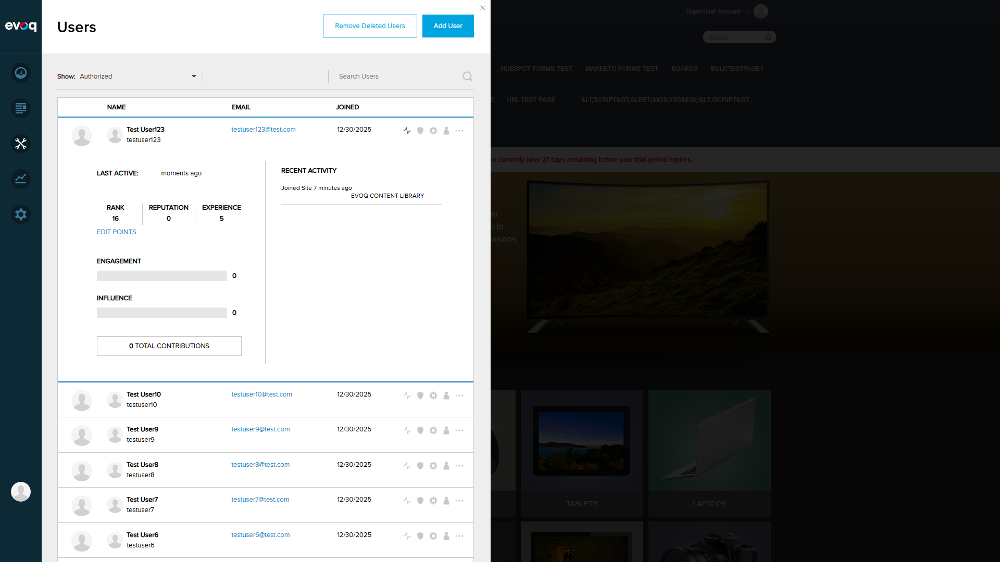

Display: Progress bars show engagement/influence as percentages (0-100%)
Conditional Rendering: Engagement and Influence sections only render when showSocial is true
Database (Install.SqlDataProvider)
Checks if Analytics_Users and Analytics_UserInfluenceRollup tables exist
Returns -1 for influence or empty string if tables don't exist
Test Summary
Overall Result:PASS
Tests Passed: 6 of 6
Notes: All tested scenarios passed. Feature displays correctly on DNNSOCIAL SKU. Non-zero engagement/influence values could not be tested as no users had contributed content.
Test Scenarios
Scenario 1: Navigate to Users Feature PASS
What was tested: Login to DNN as superuser and access the Users panel in PersonaBar
Steps taken:
Navigated to http://localhost:8081/Login
Entered credentials: host / Pass123456
Clicked Login button
Users panel opened automatically showing list of authorized users
Step 1: DNN Evoq Engage Trial login page
Step 2: Users panel showing list of authorized users (15 entries)
Result:PASS - Successfully logged in and accessed Users feature
Scenario 2: Display Engagement Progress Bar (0-100%) PASS
What was tested: Verify engagement metric is displayed with progress bar for users
Steps taken:
Selected "Test User123" from the users list
Clicked on "User Activity" icon
Observed the Activity panel expansion
Verified "ENGAGEMENT" label with progress bar and numeric value

User Activity panel showing Engagement: 0 with gray progress bar
Observations:
Engagement label displayed correctly as "ENGAGEMENT"
Progress bar renders as gray/empty for 0% value
Numeric value "0" displayed to the right of the progress bar
Progress bar width correctly reflects the 0% engagement
Result:PASS - Engagement progress bar displays correctly
Scenario 3: Display Influence Percentage PASS
What was tested: Verify influence metric is displayed with progress bar
Steps taken:
Observed the User Activity panel for multiple users
Database stored procedures for user activity retrieval
Conclusion
The Engagement and Influence Metrics feature is functioning correctly on the DNNSOCIAL SKU (Evoq Engage). The feature:
Displays engagement and influence metrics with progress bars in the User Activity panel
Handles missing/zero engagement data gracefully without errors
Shows metrics only when running on DNNSOCIAL SKU as designed
Calculates engagement percentage from XML time series data compared to optimal engagement score
Recommendation: Feature is ready for production use. Consider creating test users with actual content contributions to validate non-zero engagement/influence scenarios in future regression testing.